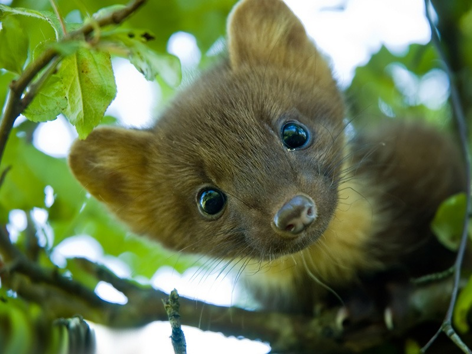
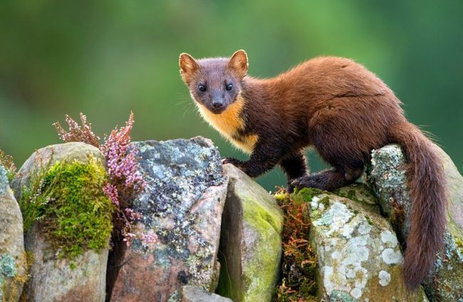
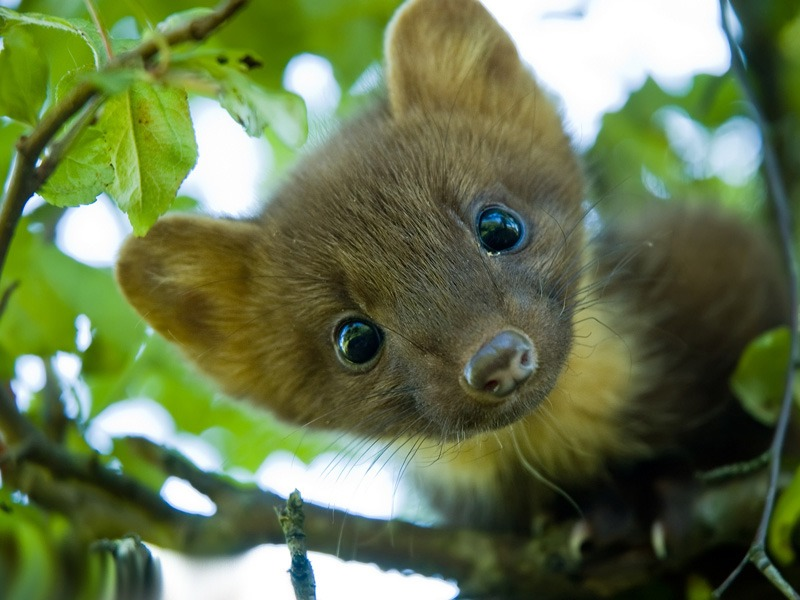
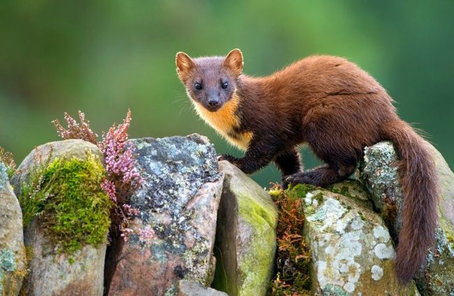
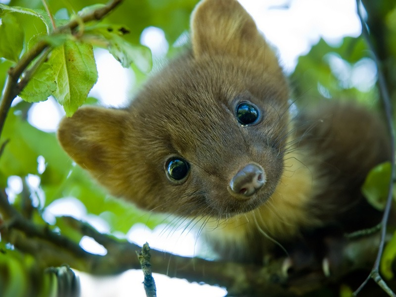
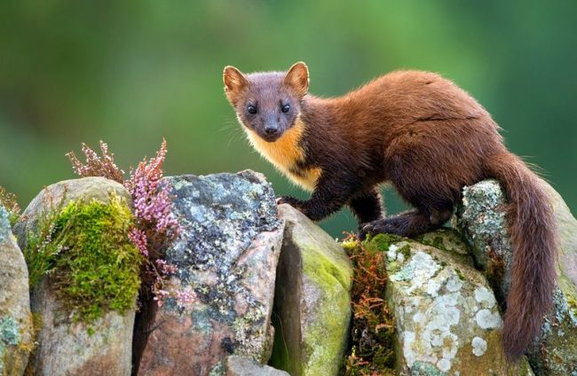

Куницы — род хищных млекопитающих из семейства куньих.
Куницы имеют сложное поведение и развитую на уровне трёхлетнего ребёнка моторику рук.
Мордочка острая с короткими ушами, тело длинное и стройное, хвост достигает половины длины тела.
Это куница


При защите своей норы и потомства куница состоянии сильно покусать человека.